리눅스마스터-1급 (2004-10-31 기출문제)
1과목: 리눅스 실무의 이해
1. 다음 리눅스에 대한 설명 중 알맞지 않은 것은?
- TCP/IP, IPX/SPX 등 다양한 네트워크 프로토콜을 지원한다.
- PC 하나의 물리적인 모니터에서 여러 개의 가상 콘솔을 지원한다.
- 공유 라이브러리를 dll 파일로 제공한다.
- 시분할을 이용하여 완벽한 멀티유저, 멀티태스킹을 제공한다.
(정답률: 77%)

2. 다음 중 운영체제의 역할을 가장 잘 표현한 것은?
- 사용자에 대한 인터페이스를 제공하며 각종 자원을 관리한다.
- 파일의 이름을 관리하며 쉽게 찾을 수 있게 한다.
- 컴퓨터의 하드웨어를 제어한다.
- 프로그램에 포함된 명령을 해석하고 실행한다.
(정답률: 77%)
3. 아래 설명의 배경으로 생겨난 것으로 알맞은 것은?
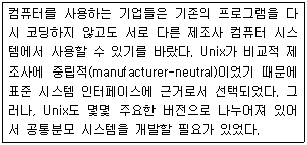
- 공유객체(shared object)
- POSIX (Portable Operating System Interface)
- HMI (Human Machine Interface)
- GUI (Graphic User Interface)
(정답률: 50%)
4. 메모리를 효율적으로 사용하기 위해 가상 메모리의 프로그램이 실행되는 순간에만 메모리로 적재되는 기능을 무엇이라 하는가?
- 실시간 페이지 적재 (Demand Loading Excutables)
- 시분할(Time sharing)
- 스왑(Swap)
- 동적 공유(Dynamic Shared)
(정답률: 15%)
5. 다음 설명 중 ( )안에 들어갈 내용으로 알맞은 것은?
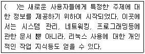
- LDP(Linux Documentation Project)
- FSF(Free Software Foundation)
- Linux Kernel Project
- Open Source Project
(정답률: 30%)
6. 일반적인 방법으로는 리눅스를 설치할 수 없는 시스템으로 알맞은 것은?
- 80286 PC
- 80386 PC
- 펜티엄 PC
- AMD PC
(정답률: 58%)
7. 리눅스 Shell에 대한 설명 중 알맞지 않은 것은?
- 사용자의 명령을 해석하는 명령어 처리기이다.
- 커널내의 시스템 콜로 내장되어 있다.
- 한 시스템에 여러개의 shell이 존재할 수 있다.
- MS-DOS의 command.com이 같은 역할을 한다.
(정답률: 48%)
8. 운영체제의 멀티부팅(Multibooting)에 대한 설명 중 알맞지 않은 것은?
- 부트 매니저를 통해서 이루어진다.
- 리눅스에서는 LILO를 이용하여 멀티부팅을 할 수 있다.
- 여러 운영체제를 한 컴퓨터에서 사용할 때 편리하다.
- 윈도우즈 계열에서는 멀티부팅을 설정할 수 없다.
(정답률: 82%)
9. 다음은 부팅과 관련된 파일의 일부이다. 이를 설명한 내용 중 알맞는 것은?
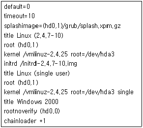
- 두 개의 리눅스와 윈도우 등 적어도 3개의 운영체제가 설치되어 있다.
- 윈도우즈 2000이 기본 부팅 운영체제이다.
- timeout=10 이므로 10초 이내에 선택해야만 부팅할 수 있다.
- 윈도우즈 2000은 첫 번째 하드디스크의 첫 번째 파티션에 설치되어 있다.
(정답률: 48%)
10. 다음과 같은 파일을 포함하고 있는 디렉토리로 알맞은 것은?
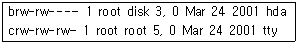
- /proc
- /etc
- /dev
- /mnt
(정답률: 48%)
11. 다음은 /etc/inittab 파일의 일부이다. 이에 대한 설명 중 알맞지 않은 것은?
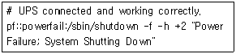
- 시스템을 종료하는 명령을 포함하고 있다.
- 시스템 종료를 두 번 시도한다.
- 시스템을 다시 부팅할 때 fsck를 수행하지 않도록 한다.
- 로그인한 모든 사용자에게 특정한 메시지를 보낸다.
(정답률: 34%)
12. 다음 설명 중 ( )안에 들어갈 내용으로 알맞은 것은?
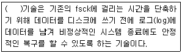
- 저널링(Journaling)
- 분산 파일시스템(Distributed filesystem)
- NTFS
- HA(High Availability)
(정답률: 67%)
13. 리눅스 파일시스템에서 파일과 관련된 정보를 가지고 있는 데이터 구조는 Inode이다. Inode 가 가지고 있는 정보로 알맞지 않은 것은?
- 파일의 이름
- 파일의 크기
- 파일의 위치
- 파일의 소유자
(정답률: 34%)
14. X-window에서 글꼴(font)를 제공하는 데몬으로 알맞은 것은?
- xfs
- fontd
- autofs
- gpm
(정답률: 28%)
15. 다음 중 shell의 환경변수를 출력하는 명령으로 .알맞은 것은?
- printenv
- showenv
- setenv
- envshow
(정답률: 39%)
16. OSI 계층 중 데이터가 목적지까지 올바르게 도달할 수 있도록 경로 선택 및 라우팅 기능을 수행하는 계층으로 알맞은 것은?
- 데이터 링크 계층
- 네트워크 계층
- 전송 계층
- 세션 계층
(정답률: 58%)
17. 네트워크 장비 중, 통신중인 데이터들을 모든 노드에 전송하지 않고, 해당 데이터의 목적지 노드로만 직접 연결해주는 장비는?
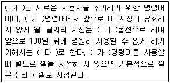
- 더미 허브
- 스위칭 허브
- 라우터
- 리피터
(정답률: 28%)
18. 네트워크의 연결성 검사를 위해 ping과 같은 도구를 사용할 수 있도록 오류를 통보하는 역할을 하는 프로토콜은?
- ICMP
- IGMP
- ARP
- RARP
(정답률: 70%)
19. 부팅시 네트워크 모듈을 자동으로 적재하기 위해 다음과 같은 내용을 저장하고 있는 파일은?
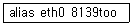
- /etc/sysconfig/network
- /etc/sysconfig/hwconf
- /etc/modules.conf
- /etc/inittab
(정답률: 43%)
20. 다음 명령 중 실행의 결과로 www.ihd.or.kr의 IP주소를 알 수 없는 것은?
- ping www.ihd.or.kr
- nslookup www.ihd.or.kr
- dig www.ihd.or.kr
- route www.ihd.or.kr
(정답률: 95%)
2과목: 리눅스 시스템 관리
21. root(Super User)에 대한 다음 설명 중 알맞은 것은?
- root에게는 어떠한 제한도 가해지지 않는다.
- root는 시스템을 재부팅할 수 없다.
- root의 uid(User ID)는 1이다.
- root는 일반 유저의 패스워드를 변경할 수 없다.
(정답률: 56%)
22. “/etc/passwd” 파일에 대한 설명으로 알맞지 않은 것은?
- 시스템의 모든 계정에 대한 관련 항목을 갖고 있다.
- uid(User ID)와 gid(Group ID)항목을 갖고 있다.
- 암호화되지 않은 사용자의 패스워드를 확인할 수 있다.
- 사용자의 홈 디렉토리를 알 수 있다.
(정답률: 45%)
23. 셸(Shell)에 대한 설명으로 알맞지 않은 것은?
- 셸은 유틸리티(Utility)와 커널(Kernel) 사이에 위치해서 상호 작용(Interface)을 담당한다.
- 리눅스에서 제공하는 셸은 크게 로그인 셸(Login Shell)과 서브셸(Sub Shell)로 나눌 수 있다.
- 리눅스에서 제공하는 셸의 종류를 알아보기 위해서는 “/bin” 디렉토리나 “/etc/shells” 파일을 확인하면 된다.
- 최초에 사용된 셸은 C 셸이다.
(정답률: 50%)
24. 다음 중 그룹 계정에 대한 설명으로 알맞는 것은?
- 그룹이 삭제되면 그에 포함된 사용자의 권한도 삭제된다.
- 사용자가 속한 그룹을 확인하기 위하여 group 명령을 사용한다.
- “/etc/passwd” 파일에 각 그룹에 속한 사용자가 기록되어 있다.
- 각 사용자별로 어느 그룹에 속하는지는 “/etc/group” 파일에 기록되어 있다.
(정답률: 50%)
25. 다음 중 chage 명령어에 대한 설명으로 알맞은 것은?
- 옵션 m은 최대 기간의 값으로 패스워드가 유효한 최대 기간을 설정한다.
- 파일, 디렉토리가 속했던 사용자 그룹을 바꾼다.
- 사용자에 대한 패스워드의 만료 기간 및 시간 정보를 변경한다.
- 특권이 없는 사용자에 의해 예외 적으로 -d 옵션을 사용해서 사용할 수 있다.
(정답률: 62%)
26. 다음 중 그룹 정보를 변경하는 명령어로 알맞은 것은?
- usermod
- groupadd
- groupmod
- groups
(정답률: 74%)
27. 다음 ( )안에 들어갈 내용으로 알맞은 것은?
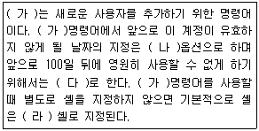
- adduser -v -v 100 csh
- adduser -f -f 100 bash
- usermod -f -f 1000 csh
- usermod -v -v 1000 bash
(정답률: 56%)
28. usermod 명령의 옵션에 대한 설명으로 알맞은 것은?
- -u : 사용자의 비활성 기간을 확인할 수 있다.
- -e : 사용자 계정 유효 기간을 지정해 준다.
- -g : 사용자 계정 홈 디렉토리의 권한을 모두 사용자로 변경한다.
- -f : 사용자 이름 또는 정보를 변경한다.
(정답률: 64%)
29. readme.txt 파일의 권한을 ‘-rw-rw-r--’로 설정 하기 위한 명령으로 알맞은 것은?
- chmod 224 readme.txt
- chmod 442 readme.txt
- chmod 446 readme.txt
- chmod 664 readme.txt
(정답률: 73%)
30. file 명령어는 파일의 종류를 출력한다. 다음과 같은 file 명령어의 수행 결과에 대한 설명 중 알맞지 않은 것은?
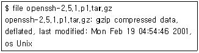
- 압축된 파일이다.
- 최초 수정일은 Mon Feb 19 04:54:46 2001 이다.
- 유닉스 시스템에서 만들어진 파일이다.
- gzip으로 압축되어졌다.
(정답률: 64%)
31. 다음 중 파일시스템 관리 명령어로 알맞지 않은 것은?
- cp
- cd
- ls
- man
(정답률: 80%)
32. 시스템 내에 존재하는 파일을 찾을 때 사용하는 명령어로 알맞은 것은?
- location
- grep
- mount
- find
(정답률: 69%)
33. 다음 설명 중 알맞지 않은 것은?
- 파일 권한이 ‘-rw-r--r-T’인 파일에서 ‘T’는 이 파일에 sticky bit가 설정되어 있고 실행권한이 없음을 나타낸다.
- ‘ls -i’를 이용하면 파일의 install 정보를 알 수 있다.
- 파일 크기가 0이고 파일 이름이 linux와 ihd인 두 개의 파일을 만드는 명령어는 ‘touch linux ihd’ 이다.
- chown 명령어를 사용할 때 -c 옵션을 이용하면 바뀌어지는 파일들에 대해서만 자세하게 보여준다.
(정답률: 14%)
34. 다음 파일시스템 관련 툴에 대한 설명 중 알맞지 않은 것은?
- fdisk : 파티션 생성을 위해 사용한다.
- mkfs : 파일시스템 생성을 위해 사용한다.
- fsck : 파일시스템 포맷을 위해 사용한다.
- fdformat : 플로피 디스크의 로우레벨 포맷을 하기위해 사용한다.
(정답률: 74%)
35. mkdir 명령어에 대한 설명으로 알맞은 것은?
- -m, --mode==MODE 옵션을 사용하면 디렉토리 생성 시에 자세한 메시지를 출력한다.
- mkdir 명령어는 디렉토리가 비어있는 경우 해당 디렉토리를 삭제한다.
- -v, --verbose : 새로운 디렉토리의 퍼미션 모드를 설정한다.
- -p, -parents : 필요하다면 부모 디렉토리도 생성한다. 부모 디렉토리가 존재하지 않아서 생기는 에러를 방지한다.
(정답률: 40%)
36. 파일 시스템 단위로 디스크의 사용량을 보여주는 명령어로 알맞은 것은?
- du
- df
- ls
- ln
(정답률: 41%)
37. 프로세스에 대한 설명으로 알맞은 것은?
- 상호 프로세스(Interactive Process)는 포그라운드 형태로만 동작된다.
- 배치 프로세스는 큐(queue)를 이용해 순차적으로 실행되는 프로세스들을 가리킨다.
- 여러 개의 프로세스가 동시에 수행될 수 없다.
- init 프로세스의 PID(Process ID)는 0이다.
(정답률: 43%)
38. 다음은 “/etc/crontab”의 내용 중 일부이다. 이것이 의미하는 것으로 알맞은 것은?
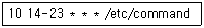
- 매달 14일부터 23일까지 오전 10시에 /etc/command 를 실행시킨다.
- 매일 오후 2시부터 오후 11시까지 매시 10분에 /etc/command를 실행시킨다.
- 매일 오전 10시 14분부터 10시 23분까지 매분 마다 /etc/command를 실행시킨다.
- 매달 10일에 오후 2시부터 오후 11시까지 10 분마다 /etc/command를 실행시킨다.
(정답률: 62%)
39. 다음은 top 명령어를 실행한 경우 출력의 일부이다. 이와 관련된 설명으로 알맞은 것은?
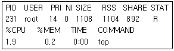
- 작업을 위해 사용된 물리적 메모리의 총 소비량은 1108Kbyte이다.
- 작업의 우선순위는 0이다.
- nice 값은 14이다.
- 공유 메모리의 양은 892Kbyte이다.
(정답률: 50%)
40. 다음은 “/usr/bin/passwd”에 대한 정보 중 일부이다. 이와 관련된 설명으로 알맞은 것은?
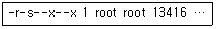
- 일반유저가 이 파일을 실행할 경우 유효 UID(effective User ID)는 root가 된다.
- 일반유저가 이 파일을 실행할 경우 유효 UID(effective User ID)와 실제 UID(real User ID)는 같다.
- 일반유저가 이 파일을 실행할 경우 실제 UID(real User ID)는 root가 된다.
- root가 이 파일을 실행할 경우 유효 UID(effective User ID)와 실제 UID(real User ID)는 다르다.
(정답률: 48%)
41. “/etc/printcap”은 스풀링 시스템에 의해 제공되는 장치를 나열한다. printcap파일에서 사용되는 엔트리 필드의 설명 중 알맞지 않은 것은?(레이저 프린터에 대한 다음의 예를 참고하라.)
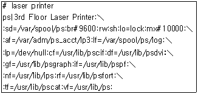
- sd: 스풀링 디렉토리
- af: 오류 로그 파일 이름
- lp: 장치 특수 파일
- lo: 잠금 파일 이름
(정답률: 17%)
42. 다음은 부팅 디스켓을 만드는 과정이다. ( )안에 알맞은 것은?(순서대로 (가) (나) (다))
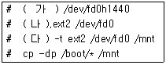
- fdformat, mount, mkfs
- mount, mkfs, fdformat
- mkfs, mount, fdformat
- fdformat, mkfs, mount
(정답률: 58%)
43. 다음 장치 파일 중 사운드 장치와 관련이 없는 것은?
- /dev/dsp
- /dev/audio
- /dev/sndstat
- /dev/sndconf
(정답률: 24%)
44. 다음 중 모듈관련 명령어와 그에 대한 설명이 알맞게 짝지어진 것은?
- modprobe: 모듈들 사이의 의존성을 검사한다.
- insmod: 관련된 모든 모듈을 로드한다.
- lsmod: 현재 로드된 모듈들의 목록을 출력한다.
- depmod: 대화적인 방식으로 모듈을 로드한다.
(정답률: 67%)
45. 하나의 하드디스크가 설치된 리눅스 시스템에 새로운 하드디스크를 설치하기위한 방법을 나열한 것이다. 다음 중 알맞지 않은 것은?
- 새 하드디스크에 파티션을 만드는 명령어는 ‘fdisk /dev/hdb’이다.
- 파티션을 분할했으면 ‘mkfs -t ext2 /dev/hdb5’ 명령어를 사용하여 파일 시스템을 만들어야 한다.
- 새 하드디스크에 swap 영역을 추가할 경우 ‘mkfs -S /dev/hdb6’ 명령어를 사용한다.
- 만들어진 파일 시스템은 mount 명령어를 사용해서 디렉토리로 마운트 해서 사용한다.
(정답률: 46%)
46. 리눅스 커널 소스의 컴파일 명령어를 순서 없이 나열한 것이다. 순서대로 바르게 나열된 것은?
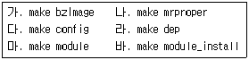
- 나-다-라-가-마-바
- 가-나-다-라-마-바
- 라-나-다-가-마-바
- 나-다-가-라-마-바
(정답률: 27%)
47. 다음 중 커널 컴파일에 대한 설명으로 알맞지 않은 것은?
- CPU 아키텍처에 대한 최적화 옵션을 통해 시스템 성능을 향상시킬 수 있다.
- 불필요한 드라이버를 제거하거나 추가할 수 있다.
- 옵션의 변경을 통하여 드라이버의 성능을 최적화할 수 있다.
- 커널을 업그레이드 하려면 항상 소스코드로부터 커널을 컴파일해야 한다.
(정답률: 53%)
48. 다음 중 커널 컴파일 옵션과 그것에 대한 설명 중 알맞지 않으 것은?
- Memory Technology Devices: 플래시 메모리와 같은 특별한 형태의 메모리 스토리지 디바이스의 지원 기능을 활성화할 수 있다.
- Network Device Support: 특정 네트워크 하드웨어 디바이스에 대한 지원을 활성화 하는 옵션을 가지고 있다. 여기에는 PPP와 ISDN도 포함되어 있다.
- Input Core Support: USB 키보드 마우스를 사용하고자 한다면 이 메뉴에서 그러한 장비들의 지원을 활성화해야 한다.
- Kernel Hacking: 이 메뉴에서는 시스템이 비정상 중지되는 상황에서도 어느 정도의 제어를 할 수 있는 옵션을 제공한다.
(정답률: 18%)
49. 다음 커널과 모듈에 대한 설명으로 알맞은 것은?
- 로드된 리눅스 모듈은 다른 커널 코드와 완전히 분리된 부분이다.
- 모듈을 로드한 후에는 완전한 동작을 위해 재부팅을 해야 한다.
- 모듈을 필요할 때마다 로드하는 것을 요구시 로딩(Demand Loading)이라 한다.
- 로드된 모듈은 커널 코드와는 다른 권한과 책임을 가진다.
(정답률: 34%)
50. 리눅스 파일 시스템에 플로피 디스크를 추가하는 명령어로 알맞은 것은?
- mkfs -t ntfs /dev/fd0
- mkfs -t msdos /dev/fd0
- mkfs -t vfat /dev/fd0
- mkfs -t ext2 /dev/fd0
(정답률: 30%)
51. syslogd 데몬이 커널로그 및 주된 로그를 기록하는 파일로 알맞은 것은?
- /var/log/messages
- /var/wtmp
- /var/dmesg
- /var/spooler
(정답률: 50%)
52. 다음 중 vi 와 같은 텍스트 편집기로 로그 내용을 살펴볼 수 없는 파일로 알맞은 것은?
- /var/log/wtmp
- /var/log/xferlog
- /var/log/dmesg
- /var/log/boot.log
(정답률: 16%)
53. xinetd.conf 파일에서 192.168.0.10 호스트에서만 접속이 가능하도록 하는 지시어로 알맞은 것은?
- allow_host = 192.168.0.10
- only_from = 192.168.0.10
- access_only = 192.168.0.10
- restriced = 192.168.0.10
(정답률: 35%)
54. 패킷필터링을 위한 규칙(ruleset)을 설정하는데 사용되는 도구는?
- ipv4
- ifconfig
- iptables
- ipcalc
(정답률: 48%)
55. 일반 Login 프로그램과는 달리 패킷 전송시 암호화하기 때문에 원격 관리의 보안이 매우 안정적인 접속 프로그램은?
- rlogin
- slogin
- ssh
- telnet
(정답률: 61%)
56. 다음 tripwire 도구에 대한 설명중 가장 알맞은 것은?
- 파일에 대한 데이터베이스를 이용해 추가, 삭제, 변조된 파일의 유무를 보고하는 무결성 검사 도구이다.
- 시스템에서 현재 열려진 포트를 검사하여 보고해 주는 도구이다.
- 위변조된 파일을 찾아내어 자동으로 복구하여 정상화시키는 도구이다.
- 시스템에서 보안과 관련된 취약점을 찾아 보고하는 도구이다.
(정답률: 35%)
57. 다음과 같은 결과를 보여주는 보안도구로 알맞은 것은?
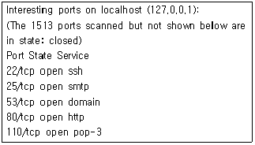
- portmap
- portscan
- ntop
- nmap
(정답률: 30%)
58. 다음 설명중 ( )안에 알맞은 용어는?
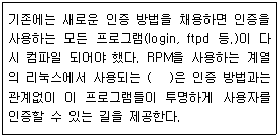
- PAM
- Shadow
- MD5
- NIS
(정답률: 48%)
59. cpio에 대한 설명 중 알맞지 않은 것은?
- 파일을 테이프 드라이브로 저장하기 위해 사용하는 프로그램이다.
- 디렉토리를 다루지 못하기 때문에 파일 목록을 표준입력으로 제공받아야 한다.
- 네트워크 백업을 지원하지 않기 때문에 원격 테이프 드라이브는 사용할 수 없다.
- 파일을 아카이브로부터, 또는 아카이브로 복사 한다.
(정답률: 37%)
60. 다음 중 여러 시스템의 저장장치를 동일하게 유지하기 위해 사용하기 알맞은 명령으로 짝지어진 것은?
- rdist , rsync
- rsync, rdate
- rdate, rview
- rdist, rdate
(정답률: 44%)
3과목: 네트워크 및 서비스의 활용
61. 웹 브라우저의 역할에 대한 설명 중 틀린 것은?
- 연결 작업과 데이터 전송 등에 사용되는 프로토콜이 HTTP(HyperText Transfer Protocol)이다.
- 서버의 요청(Request)에 대한 클라이언트의 응답(Response)이 기본 원리이다.
- 인터넷에 연결되어 있는 호스트들 중 사용자가 지정한 호스트로 접속한다.
- 지정한 호스트의 문서를 사용자의 호스트로 가져와서 보여준다.
(정답률: 43%)
62. PHP에 대한 설명으로 적절하지 않은 것은?
- 윈도우 계열 OS의 ASP(Active Server Page)와 같은 역할을 한다.
- 개발 편의성은 뛰어나지만, 기존의 펄(Perl)이나 ASP보다 느린 속도가 단점이다.
- 운영체제에 독립적으로 사용 가능하다
- 다양한 데이터베이스 연동 API를 지원한다.
(정답률: 36%)
63. 서버의 루트 디렉토리 기본경로를 지정해 주는 아파치 웹 서버의 환경 설정은 무엇인가?
- LockFile /usr/local/apache/logs/httpd.lock
- ServerRoot "/usr/local/apache"
- PidFile /usr/local/apache/logs/httpd.pid
- ScoreBoardFile /usr/local/apache/logs/httpd.scoreboard
(정답률: 59%)
64. 아파치 웹 서버의 환경 설정 중, MaxKeepAliveRequests 설정의 설명 중 알맞은 것은?
- KeepAliveTimeout 설정이 선행되어야 한다.
- 최대 성능 향상을 위해 보통 낮은 값을 사용 한다.
- 값이 “0”일 경우 클라이언트가 접속을 끊을 때 까지 계속 연결 상태로 있다.
- 클라이언트가 서버에 요청한 정보를 받을 때 소요되는 시간을 정해 주는 것이다.
(정답률: 29%)
65. 웹 호스팅 서비스에서 사용하는 아파치 웹 서버의 주소 기반 가상 호스팅(IP-based Virtual Hosting)에 대한 설명으로 알맞지 않은 것은?
- http.conf 파일 안에서 NamevirtualHost 항목을 주석처리 한다.
- IP 주소 한 개로 여러 도메인을 사용할 수 있는 방법으로, 각각의 도메인들에 개별적으로 ServerName, DocumentRoot, CustomLog 등을 설정할 수 있다.
- 사설 IP를 사용하고 있는 인트라넷 환경에서 적합한 방법이다.
- 사용하는 랜카드에 ifconfig와 route를 이용하여 가상의 IP를 추가 설정해야 한다.
(정답률: 48%)
66. 다음은 MySQl의 소스 컴파일 설치 과정 중 한 부분이다. 이와 관련된 설명으로 알맞지 않은 것은?
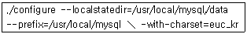
- 이 작업의 결과 /usr/local/mysql/data에 mysql과 test 두 개의 데이터베이스가 생성된다.
- --prefix=/usr/local/mysql는 MySQL이 설치 될 홈 디렉토리를 지정하는 옵션이다.
- --localstatedir=/usr/local/mysql/data는 MySQL의 데이터들을 /usr/local/mysql/data에 저장시키기 위한 옵션이다.
- --with-charset=euc_kr는 MySQL에서 한글 사용을 할 수 있게 해주는 옵션이다.
(정답률: 23%)
67. httpd 명령어와 사용 가능한 옵션 중 설명이 알맞지 않은 것은?
- -v : httpd의 버전을 프린트하고 실행을 마친다.
- -? : httpd의 옵션을 프린트하고 실행을 마친다.
- -X : 내부적인 테스트를 위해 싱글 프로세스 모드로 실행시킨다.
- -d serverroot : 환경 설정 파일을 지정해서 시작하게 한다.
(정답률: 39%)
68. httpd.conf 파일은 몇 가지 환경 설정으로 이루어져 있다. httpd.conf 파일에 없는 환경 설정은 무엇인가?
- 메인 서버 환경 설정(Main Server Configuratioin)
- 전체 환경 설정(Global Environment)
- 클라이언트 환경 설정(Client Configuration)
- 가상 호스트 설정(Virtual Host)
(정답률: 25%)
69. PostgreSQL의 특징으로 알맞지 않은 것은?
- 고수준 확장성
- 객체지향
- 관계형 모델
- 인텔리전트 에이전트 기능
(정답률: 59%)
70. JServ에 대한 설명으로 알맞지 않은 것은?
- 아파치에 직접 포함시켜 컴파일을 해서 사용 할 수 있다.
- 새로운 프로세스를 만들어 실행한다.
- CGI에 비해 효율면에서 월등히 우수하다.
- 동적 로딩 모듈로 만들어서 사용할 수 있다.
(정답률: 20%)
71. SSL을 사용하기 위해 httpd.conf 파일의 보안 가상 호스트 관련 속성을 넣고자 할 때, 들어가야 할 속성과 그 내용 설명으로 알맞지 않은 것은?
- SSLEngine : SSL을 구동하는 ModSSL 명령
- SSLCertificateFile : 인증서 위치와 그 이름을 아파치에게 알려준다.
- SSLCertificateKeyFile : 비밀키 이름과 그 위치를 아파치에게 알려주며, 이 곳에서 정의된 디렉토리는 루트와 해당 사용자에게 읽기/쓰기 허가권을 주어 비밀키 역할을 한다.
- SSLCACertificateFile : Intermediate(root) 인증서 위치를 아파치에 알려 준다.
(정답률: 43%)
72. RedHat 계열에서 다음 중 삼바 데몬 스크립트의 저장한 파일은?
- /etc/rc.d/init.d/smb
- /usr/sbin/smbd
- /etc/sysconfig/samba
- /etc/samba/smb.conf
(정답률: 32%)
73. 삼바 서버의 환경 설정에 대한 설명중 알맞은 것은?
- /etc에 smb.conf 파일로 되어 있다.
- "//"는 주석을 가리킨다.
- 전체 설정(Global Setting), 공유 정의(Share Definitions)의 두 부분으로 구성된다.
- “;”은 주석처리로 인식하지만, 설정 내용을 on 하는 경우 사용한다.
(정답률: 36%)
74. 삼바 서버의 설정 중 공개적으로 접근이 가능한 디렉토리를 지정하는 것으로 공유 디렉토리를 지정할 때 사용하는 옵션들에 대한 설명 중 알맞은 것은?
- browseable : 쓰기가 가능한 특정 사용자를 지정한다.
- path : 공유할 디렉토리의 상대 경로이다.
- write list : 공유 디렉토리 리스트를 보여준다.
- valid users : 공유 디렉토리에 로그인 할 수 있는 사용자임을 선언한다.
(정답률: 54%)
75. smbclient 프로그램은 리눅스 삼바 클라이언트 유틸리티로 이 명령을 이용하여 삼바 서버의 상태를 점검할 수 있다. 이 유틸리티는 이것뿐 만 아니라 윈도우 서버에 접속하는 데에도 사용된다. 이 유틸리티에 대한 설명으로 알맞지 않은 것은?
- -L : 대상 호스트를 가리킨다.
- -I : IP 주소를 사용할 때 사용한다.
- -E : stderr 대신에 stdout에 메시지를 쓴다.
- -P : 서비스에 프린터 기기로 접속한다.
(정답률: 27%)
76. SWAT 프로그램에 대한 설명으로 알맞은 것은 ?
- Samba Web Aid Tool의 약자이다.
- /etc/services 파일과 /etc/xinet.d 밑에 SWAT쉘 스크립트를 설정해야 한다.
- 기본적으로 포트 번호 213번을 사용한다.
- 일반 사용자 계정으로 삼바를 설정할 수 있는 유틸리티이다.
(정답률: 28%)
77. NFS 마운트 할 때 사용되는 옵션 중 설명이 알 맞은 것은?
- wsize : NFS 서버로부터 읽어들이는 바이트 수를 지정한다.
- soft : 타임 아웃이 발생하면 I/O 에러를 표시 한다.
- timeo : 타임 아웃이 발생하면 “server not responding" 메시지를 표시하고 계속 재시도 한다.
- hard : NFS 서버에 타임아웃이 발생되면 즉각 접속을 중지한다.
(정답률: 16%)
78. ProFTP 환경 파일 설정(proftpd.conf)에서 설명이 알맞지 않은 것은?
- ServerName : 사용자가 FTP 서버에 접속했을 때 이 FTP 서버의 이름이 무엇인지 출력해준다.
- MaxInstances : inetd mode일 때 최대 접속 가능한 사용자 수를 지정한다.
- ServerType : ProFTP 서버를 실행시키는 방법이다.
- <Directory 디렉토리명> --- </Directory> : 명시한 디렉토리에 대한 옵션을 정의한다.
(정답률: 32%)
79. ftp 서버에 접속 한 후, help 명령을 이용하여 볼 수 있는 여러 가지 명령어에 대한 다음의 설명 중 알맞지 않은 것은?
- passive : passive transfer mode 의 전환을 담당한다.
- lcd : 로컬 시스템의 디렉토리 이동 명령이다.
- case : 대/소문자를 구분하여 보여준다.
- size : 로컬시스템의 파일의 크기를 MB(Mega Byte)단위로 보여준다.
(정답률: 39%)
80. FTP 서버는 현재 FTP 서버에 연결하고 있는 사용자들을 확인하여 관리할 수 있는 몇가지 관리 프로그램을 제공해 주고 있다. 관련 명령어와 그 의미가 잘못 연결된 것은?
- ftpcount - 현재 FTP 서버를 이용하고 있는 사용자 수 확인
- ftpwho - FTP 서버에 접속한 사용자 수를 간단하게 보여줌
- ftpshut - FTP 서버 셧다운
- ftpstart - FTP 서버 기동
(정답률: 15%)
81. 다음 중 메일 서비스를 위한 구성 컴포넌트가 아닌 것은?
- MTA (Mail Transfer Agent)
- MUA (Mail User Agent)
- MDA (Mail Delivery Agent)
- MRA (Mail Receive Agent)
(정답률: 60%)
82. sendmail.cf 파일에서는 샌드메일 전송모드를 직접 지정하여 사용한다. 다음 중 샌드메일에서 지원되지 않는 전송모드로 알맞은 것은?
- interactively(mqueue에 있는 메일들을 동기화 모드로 작동시켜 메일을 전송)
- immediately(mqueue에 있는 메일들을 background mqueue에 보내고 실시간 모드로 전송)
- background(mqueue에 있는 메일들을 비동기화 모드로 작동시켜 전송)
- defer(메일을 수신하여 가능한 한 빨리 큐에 저장)
(정답률: 13%)
83. 샌드메일이 작동하게 되면 /var/maillog파일에 메일전송에 관한 로그를 기록하게 되는데, 이때 기록하는 로그 수준 정도에 따라 loglevel로 지정해줄 수 있다. loglevel 값과 의미가 틀리게 짝지어 진것은?
- 0 - 최소정보만 기록
- 1 - 심각한 에러 / 보안정보 기록
- 2 - TCP 레퍼에 의해 거부된 접속 기록
- 3 - 잘못된 주소, 포워드 에러, 시간경과에 따른 접속실패 기록
(정답률: 19%)
84. 스팸머들을 방지하기 위하여 샌드메일은 SMTP 이용에 제한을 두어 자신의 네트워크가 아닌 경우에는 자신의 메일 서버를 이용하여 메일을 보내지 못하도록 하고 있다. 이는 access파일을 이용하여 옵션을 수정하여 이루어지는데 이에 대한 설명 중 알맞은 것은?
- RELAY : access 파일안에 지정되어 있는 호스트나 IP, 도메인에 대한 메일 수신
- DISCARD : 상대방에게 거부 메시지와 함께 메일을 받지 못하게 하는 기능
- MAILCONTROL : 샌드메일에서의 메일 필터링 기능
- REJECT : 상대방에게 거부 메시지없이 메일을 받지 못하게 하는 기능
(정답률: 27%)
85. 리눅스 기반의 시스템에서 샌드메일은 전자우편용으로 가장 광범위하게 사용되는 SMTP서버 이다. 이에 대한 설명으로 알맞지 않은 것은?
- 상용패키지인 샌드메일에는 POP3 서버가 포함되어 있으며, SMTP는 대개 TCP 25번 포트에서 운영되도록 만들어져 있다.
- 샌드메일 환경 설정에서는 크게 주 설정파일, 메일 alias설정, 샌드메일 접근제어, 가상사용자 매핑 부분으로 나누어져 있다.
- sendmail.cf 파일은 /etc/밑에 존재하며 샌드메일의 주 설정파일이다.
- virtusertable파일은 가상 사용자 매핑에 대한 파일로 /etc/passwd 파일에 존재하는 사용자를 대상으로 한대의 서버에 여러대의 가상 호스트를 운영하고자 할 경우에 이용 된다.
(정답률: 25%)
86. 다음은 슈퍼 데몬에 대한 설명이다. 알맞지 않은 것은?
- 슈퍼데몬이란 서버에서 실행되는 프로그램으로서 하나의 데몬을 가르키며, 하나의 데몬이 여러 데몬을 관리한다.
- 슈퍼데몬은 /xinetd.conf 설정파일을 읽고, /etc/services파일에 설정된 포트번호에 대해서 클라이언트의 요청이 있을 때만 필요한 데몬을 실행시킨다.
- 서버에서 실행되는 데몬의 유형은 크게 슈퍼 데몬과 Standalone 모드로 구분된다.
- 슈퍼데몬은 항상 메모리에 상주하여 클라이언트의 요청에 따라 해당 데몬을 포그라운드로 상태로 전환을 한다.
(정답률: 36%)
87. 아래는 샌드메일 설정에 관련된 파일들의 목록이다. 각 파일의 이름과 설명이 틀리게 연결된 것은?
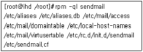
- /etc/access - 샌드메일 중계 기능 설정파일
- /etc/mail/virtusertable - 가상 유저 테이블
- /etc/rc.d/init.d/sendmail - 샌드메일 설정 파일
- /etc/mail/domaintable - 샌드메일 도메인 매핑 설정 파일
(정답률: 11%)
88. /etc/services에는 네트워크에 관련된 서비스가 포함되어있다. 이 파일에는 service-name, port/protocol, aliases, comment와 같은 항목으로 구성되어 있는데 각각의 항목과 그 의미가 틀리게 연결된 것은?
- service-name : 각 포트에서 사용될 서비스의 이름을 설정하는 부분으로, 데몬 프로그램과 일치하도록 한다.
- port/protocol : 사용될 포트번호와 프로토콜 유형을 말하는 것으로 사용할 수 있는 프로토콜은 /etc/protocols에 설정되어 있다.
- aliases : 서비스 이름에 대한 별칭으로 이러한 별칭은 4개까지 지정될 수 있다.
- comment : 주석문으로 # 이후의 문자는 주석으로 처리된다.
(정답률: 34%)
89. 특정데몬을 수정한 후에는 슈퍼데몬을 재시작 해야하는데 이때 사용하는 명령어는 /etc/rc.d/init.d/xinetd 이다. 이 데몬 파일은 실행시에 파라미터를 받는데 이에 해당되지 않는 것은?
- pause
- reload
- status
- stop
(정답률: 36%)
90. DNS(Domain Name System) 서버란 인터넷상의 모든 호스트에 각자의 이름을 부여해 사람들이이해하기 쉽게 해주는 것이다. 다음은 DNS 서버의 종류를 나타낸 것이다. 알맞지 않은 것은?
- Primary 서버
- Secondary 서버
- Caching-only 서버
- DMS (Domain Management System) 서버
(정답률: 59%)
91. 프락시 서버에 대한 설명으로 알맞지 않은 것은?
- 프락시 서버는 사용자가 웹 브라우저를 이용하여 인터넷을 사용할 때 속도의 보완을 위해서 사용된다.
- 프락시 서버는 캐시 서버를 만들어 이미 방문한 웹사이트를 캐시에 미리 저장한 후, 사용자가 다시 이 사이트에 접속했을 때에 캐시 서버에 저장된 내용을 보여준다.
- 프락시 서버를 사용했을 때의 장점은 모든 사용자들에게 캐시 서비스를 하다는 것이다.
- 프락시 서버를 사용하는 클라이언트는 프락시 서버에 대한 자동 인식이 될 수 있도록 지원 한다.
(정답률: 32%)
92. DNS 서버를 구축하고 테스트 할때 사용되는 명령어의 설명으로 알맞은 것은?
- dig는 인터넷 호스트 정보를 검색할 때 사용하는 유틸리티로 호스트 이름을 인터넷 주소로 변환해 주는 기능을 가지고 있다.
- Netstat는 특정 도메인에 대한 검색 출력을 상세히 보여주는 도구로서 쿼리에 대한 결과와 인증서버 정보, 레코드 등 그에 대한 추가 정보들을 출력해 주는 기능을 가지고 있다.
- host는 호스트의 네트워크 상태를 알아내는 도구이다.
- nslookup 은 일반적으로 네임서버 설정이 올바른지를 확인하기 위해 사용되는 도구이다.
(정답률: 38%)
93. xinetd는 tcp_wrapper와 유사한 접근 제어 능력뿐만 아니라 확장된 능력을 제공한다. 이에 해당되지 않는 것은?
- TCP, UDP와 RPC 서비스들에 대한 접근 제어
- 타임 세그먼트에 기초한 접근 제어
- 서비스 거부 공격에 대한 효과적인 억제
- 총 서버 수에 대한 능동적인 확장
(정답률: 39%)
94. 다음 설명 중 ( )안에 들어갈 내용을 순서대로 알맞게 나열한 것은?
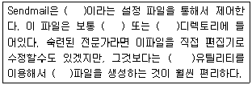
- sendmail.cf, /etc, /etc/mail, m4, sendmail.cf
- sendmail.cf, /etc, /etc/rc.d/, m5, mail.profile
- mail.profile, /etc, /etc/rc.d/, m4, mail.profile
- mail.profile, /etc/, /etc/mail, m5, sendmail.cf
(정답률: 39%)
95. DHCP 클라이언트라 함은 dhcpcd를 가리키고 시스템에서 데몬으로 떠 있으면서 활동을 하게 되는데 이 dhcpcd의 옵션에 대한 설명으로 알맞지 않은 것은?
- -d : syslog에 기록하는 메시지의 레벨을 말하는 것이다.
- -B : DHCP 서버로부터 broadcast 응답을 요청한다.
- -C : dhcpcd가 현재 시스템에 존재하는 /etc/resolv.conf 파일을 대체하는 것을 금지한다.
- -T : 테스트 모드로 움직인다. 즉 실질적인 활동은 하지 않게 된다.
(정답률: 44%)
96. nmap은 network mapper로써 port를 스캔하는 도구이다. 자신의 시스템에 열려있는 포트를 검사하거나 다른 시스템의 열려있는 포트를 검사하는 nmap의 옵션중 알맞지 않은 것은?
- -b : ftp 바운스 공격가능성을 스캔
- -f : 스캔시에 작은 단편화된 패킷을 보냄
- -F : 목적지로부터 inetd의 데이터를 가져옴
- -e : 인터페이스를 명시함
(정답률: 32%)
97. 익명의 유저가 시스템에 portscan을 하지 않는가를 검사하고, IP의 접근을 tcp_wrapper로 제한하는 프로그램으로 알맞은 것은?
- nmap
- portsentry
- icmpinfo
- tripwire
(정답률: 14%)
98. 특정 서버에 과부하가 걸리도록 계속 요청을 보내서 서비스를 사용하지 못하게 만들어버리는 네트워크 침해 유형을 무엇이라고 하는가?
- 트로이 목마
- back door
- spoofing
- DoS
(정답률: 67%)
99. 네트워크 침입에 대한 대처방안에 대한 설명 중 알맞지 않은 것은?
- 불필요한 액세스는 모두 차단하면서 허가된 사용자만 내부의 자원을 액세스 할 수 있도록 허용하는 목적을 가진 패킷필터 방화벽와 IP Chains를 이용한다.
- IP Tables는 수신된 패킷의 순서에 신경 쓰지 않는 상태배제형(stateless) 방화벽으로, 상태 테이블에 활성 연결의 상태를 기록하고 트래킹한다.
- TCP Wrappers는 호스트 기반의 보안 계층으로서, inetd에 의해 시작되는 데몬들에 적용되고, hosts.allow나 hosts.deny 파일에 지정된 규칙에 따라 액세스를 허가하거나 거부한다.
- 침입탐지 시스템은 크래커가 시스템의 서비스를 액세스하려는 시도 및 그시도의 성공유무를 파일에 기록하고, 특정 IP주소나 호스트로부터 연속적인 액세스 실패 발생유무를 파악한다.
(정답률: 37%)
100. 해커를 유인하여 그들의 해킹 수법이나 행동 방식 등을 연구하기 위하여 두는 서버로 이 시스템에 해커가 접근하면 해커의 동작을 모니터링하면서 최신 해킹 기술이나 해커의 신분 등 각종 정보를 수집할 수 있다. 이 서버의 이름을 무엇이라 하는가?
- VPN
- HONEYPOT
- Sniffing
- DMZ
(정답률: 24%)
공유 라이브러리란 여러 프로그램에서 공통으로 사용되는 함수나 데이터를 라이브러리 형태로 제공하는 것을 말한다. 이를 통해 여러 프로그램에서 같은 기능을 구현할 필요 없이 라이브러리를 호출하여 사용할 수 있다. 리눅스에서는 공유 라이브러리를 .so 파일로 제공하며, 이는 윈도우에서 사용되는 dll 파일과 유사한 역할을 한다.